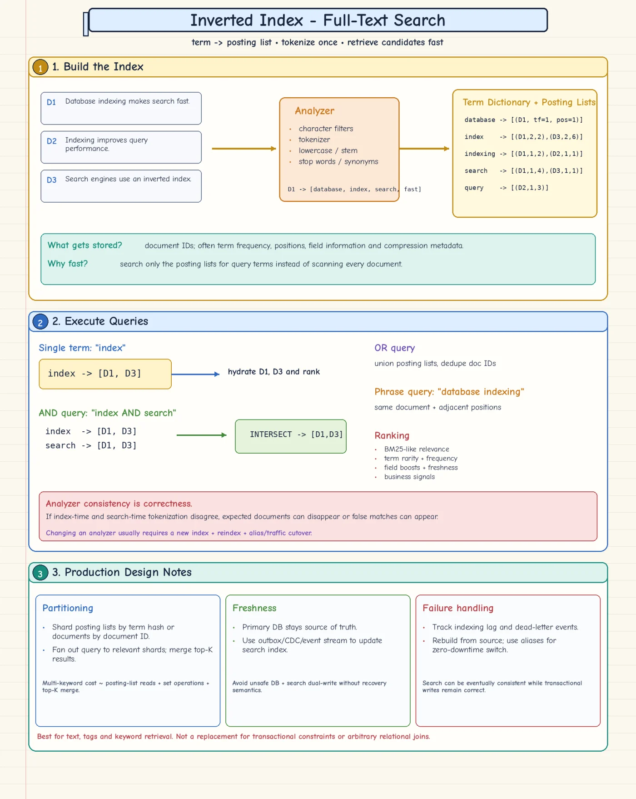

Topic · Database Indexing
Inverted Index (Full-Text Search)
Flip document → terms into term → documents. Posting lists power keyword, Boolean, phrase, and ranked search.


Quick Revision
- Term → posting list of
(doc_id, frequency, positions, field). - AND = intersect (smallest list first), OR = union, phrase = check positions.
- Index-time and search-time analyzers must match.
- DB stays source of truth; outbox/CDC feeds the search index; rebuild from source.
- Shard by document (fan-out + merge top-K) or by term.
Build and query
D1: "database indexing makes search fast" D2: "indexing improves query performance" D3: "search engines use an inverted index" indexing → [D1, D2] search → [D1, D3] index → [D3]
- Analysis - normalize, tokenize, lowercase, stem/lemmatize, stop words, synonyms, language rules.
- Postings - positions enable phrase/proximity; term stats drive BM25 ranking.
- Queries - single term = read list; AND intersect; OR union + dedupe; NOT subtract carefully; phrase verify positions; ranking blends relevance, boosts, freshness, business signals.
- Analyzer change - new index → reindex from source → validate → switch alias → retire old.
- Distribution - document sharding, term sharding, or hybrid (tenant/language/time, then documents). Delta-encode sorted IDs to compress.
Database full-text vs search engine
- DB-native - moderate scale, transactional simplicity, limited features, one system to run.
- Elasticsearch/OpenSearch/Solr - relevance tuning, many fields/facets/aggregations, independent scaling, eventual consistency OK.
- Safe sync - DB transaction writes data + outbox → CDC consumer updates index → monitor lag → rebuild when needed. No naive dual writes.
Trade-offs
| Choice | Benefit | Cost / risk |
|---|---|---|
| Database full-text index | Fewer systems, simpler consistency | Less scale and relevance flexibility |
| External search engine | Rich analysis, ranking, facets, independent scaling | Lag, replay, reconciliation, more ops |
Failure modes
- Search misses expected docs - analyzer mismatch → version analyzers, test tokens, reindex + alias switch.
- DB and search disagree - dual writes or lost events → outbox/CDC, idempotent consumers, DLQ, lag alerts, rebuild.
- Multi-keyword search slow - big lists intersected badly → smallest first, skip/galloping, compression, top-K early exit.
Interview practice
Answer aloud, then reveal.
Coupang L6 (Oct 2026): product reviews searchable by keyword.
Review DB is source of truth; outbox/CDC builds an inverted index asynchronously. Compressed posting lists (IDs, frequencies, positions), document shards, intersect/union, filter by product/rating/language, rank, merge top-K. Idempotent consumers, lag monitoring, DLQ, rebuild from DB.
Uber SDE-2: billions of messages - retrieve IDs for one or more keywords.
Inverted index of normalized terms → compressed sorted posting lists of message IDs. AND = intersect smallest first, OR = union, phrase = positions. Shard by document or term, replicate, merge top-K; messages stored separately; durable log feeds updates; support rebuild.